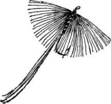
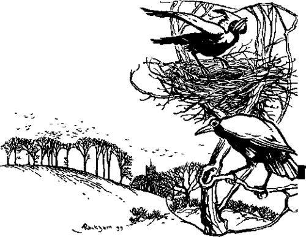

Dry, Fly Fishing. Part 12
Description
This section is from the book "Fly Fishing", by Sir Edward Grey. Also available from Amazon: Fly Fishing.
Dry, Fly Fishing. Part 12
In some cases perhaps this is so because the water is not fished enough, but in others it is simply because the water itself is more suited to produce quantity than quality of trout. An angler who wishes to enjoy the real excitement of dry fly fishing should try to get water where the trout average at least one and a half pounds in weight. In such water two pounders will be fairly common and three pounders not unknown. Where trout average two pounds in weight the fishing may be better still, but I am doubtful of the advantage of having a heavier average weight than two pounds-, if the angler has to rely upon one stretch of water only for his season's sport. Where there is no Mayfly the trout up to three pounds in weight may be expected to rise more or less all through the summer. Trout above that weight are, taking the season all through, bad rising fish, and the angler has to rely for his sport either upon the May-fly or upon late evening fishing.
An ideal piece of water would be one with broad shallows here and there, but with plenty of deep stretches, not stagnant, but with a good current all down them; its breadth in the deeper parts should be about as much as can be cast across by a single-handed rod, and considerably more on the shallows where wading is possible, and it should be fairly well fished, to prevent it from becoming over-stocked. On such water in a pure chalk stream if there is no Mayfly, it should be possible, all through May, June, and July, to have good days with trout averaging nearly two pounds and in the finest condition, and this may be done without relying upon the evening rise. It is not meant by this that every day in May and June, and still less in July, will be a good one, but that there will be several days in May and June, and some days in July, when a good basket can be made before the evening. It will have to be done with small flies and fine gut, and the angler, who lands in this way from five to ten trout, averaging two pounds apiece, on a fine summer's day, need wish for no more delicate and exciting sport in trout fishing. One often reads of days with many three, four, and even five pounders on parts of the Test or Kennet, but I gather that these splendid baskets are made with the May-fly, or with a large fly late in the evening, and that the waters in which they are possible do not give good fishing in the day-time after the middle of June.
In these days of artificial rearing and careful preservation, there is always a danger even on club waters of over-stocking. I doubt whether there is much risk of this being done by the most lavish distribution of fry, but I am sure it is easily done by turning in too large quantities of yearlings or two-year-old fish, and I have known or heard of instances where the average weight and condition of the trout has been injured in this way, and the sport has suffered in consequence. Any given stretch of river, well preserved and free from pike and coarse fish, will keep alive a much larger total weight of trout than it can fatten; and now that good dry fly water is so carefully looked after, there is a tendency to try to increase both the number and total weight of trout that can be taken in each season from each piece of water. It is easy to do this at the expense of the condition of the fish, and so to ruin the sport for the time being.
The condition of trout varies in different seasons. One cannot expect the average condition of trout of two pounds and upwards to be first-rate before May, and all through the season some fish will be landed which are not first-rate, but the proportion of these seems to me to vary in different years. In some years the trout seem to thrive better than in others. I am not thinking now of whether they are forward or backward in condition early in the season, but of the average excellence of condition which is reached by the middle of June, after which trout cannot be expected to improve. In May 1887 I noticed that the average condition of the trout landed during the month was exceptionally fine. After that year it seemed to me that, though some fish were as good as the best in 1887, there was not the same universal excellence, and in some seasons there was a real deficiency of condition, though the number of the trout in this particular piece of water did not increase. Now in 1887 there was a very good supply of water in Hampshire chalk streams at the beginning of the season : it fell off greatly towards the end of the summer, and in no subsequent season have we started in May with as good a head of water as in 1887. So, at least, it seemed to me, and I was inclined to think, that the condition of the fish was affected by the flow of water: that they throve better, were more active, and had better appetites in a good flow of fresh water. But the year 1898 entirely upset this theory, for in that season in May and June the average condition of the trout in the same water was again exceptionally fine, though the head of water in the river was exceptionally low. The first suggestion of course will be that the abnormally mild winter of 1897-98 accounted for this, but the winter which preceded May 1887 was not very mild, and other observations have not given me any support for the theory that a mild winter ensures good condition in chalk stream trout.

Continue to: